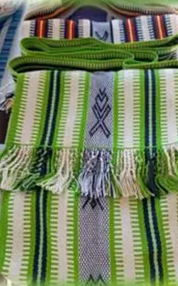
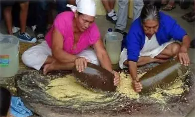
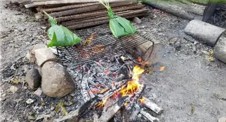
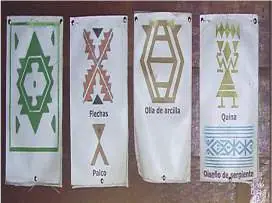
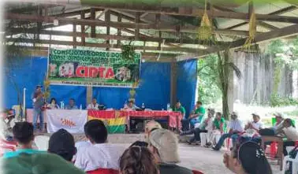
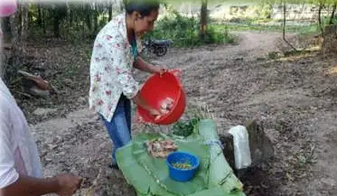

Cultura viva
El pueblo Tacana te recibe
Las comunidades de la TCO Tacana conservan saberes milenarios sobre el río y el bosque: plantas medicinales, tejidos en telar, cerámica, música y una cocina que nace del agua y la selva.
Este proyecto pone en el centro a la mujer tacana, históricamente relegada en la toma de decisiones, para que lidere los servicios turísticos, la gastronomía y la artesanía.
Tu visita fortalece su autonomía económica y la transmisión de su cultura a las nuevas generaciones.
- 13comunidades beneficiarias
- 2,912habitantes en la cuenca
- 1,827en Tumupasa, el pueblo anfitrión

Tradición en imágenes






Comunidades de la cuenca del Lago Moa
Habitantes por comunidad. Fuente: diagnóstico del proyecto UMSA – CIMTA.
- Tumupasa1,827
- La Esmeralda242
- Santa Ana198
- San Silvestre127
- 7 de Diciembre120
- Everest86
- 25 de Mayo82
- Esmeralda 171
- El Dorado44
- Villa Aroma39
- Río Colorado27
- Nueva Palestina27
- Nueva Jerusalén22